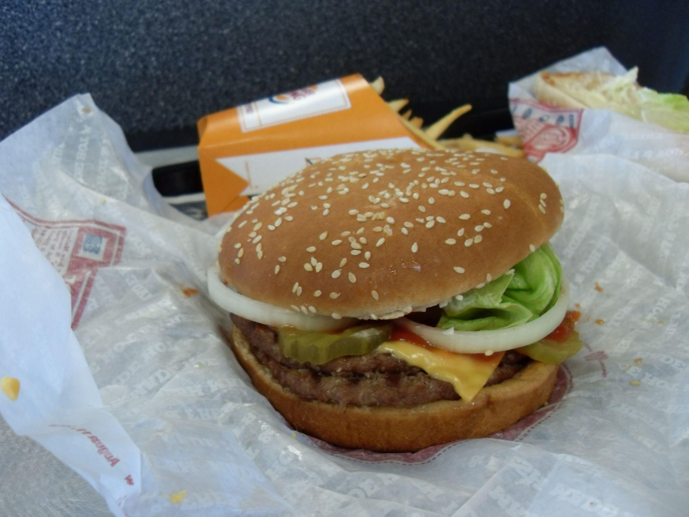

Home
Burger

Description
This delicious homemade pasta is soft, flavorful, and easy to make from scratch.
It’s the perfect base for any sauce—creamy, tomato-based, or olive oil and herbs.
The dough comes together quickly, and with just a few simple ingredients,
you can create a restaurant-quality meal right in your kitchen.
Ingredients
- 2 cups all-purpose flour
- 2 large eggs
- 1 tablespoon olive oil
- ½ teaspoon salt
- Water as needed
Steps
- Place the flour on a clean surface and make a well in the center.
- Add eggs, olive oil, and salt into the well.
- Slowly mix the ingredients with a fork, incorporating the flour gradually.
- Knead the dough until smooth and elastic, about 8–10 minutes.
- Cover the dough and let it rest for 30 minutes.
- Roll out the dough and cut it into your desired pasta shape.
- Cook the pasta in boiling salted water for 2–3 minutes, then drain and serve.